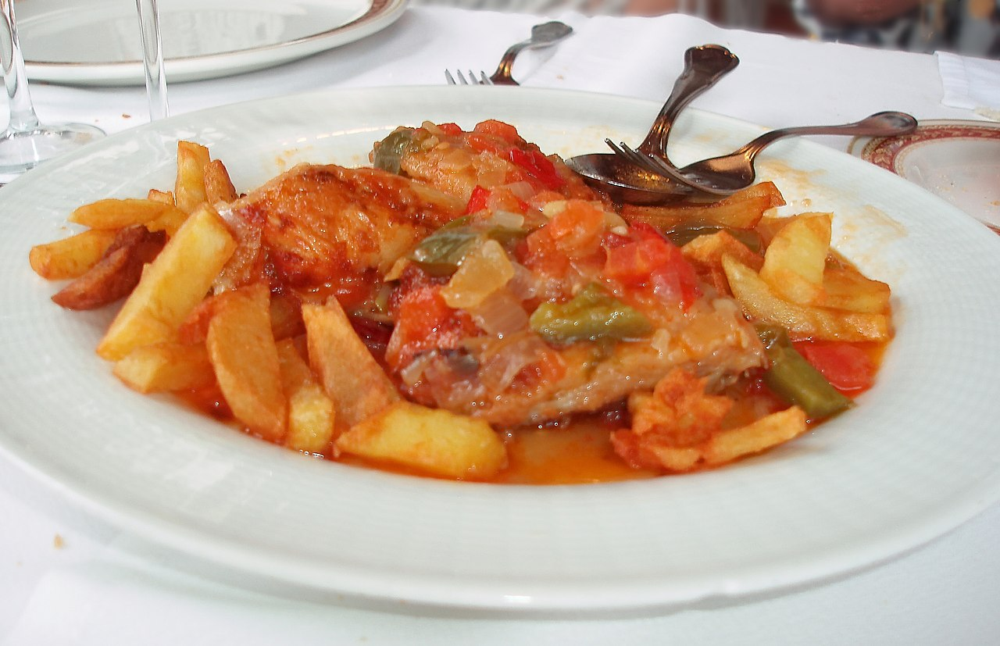

Pollo al Chilindrón
Ingredientes
- 1 pollo entero troceado
- 1 pimiento rojo
- 1 pimiento verde grande
- 4 dientes de ajo
- 1 cebolla grande
- 50 g de jamón serrano
- 150 ml de vino blanco
- 400 g de tomate picado
- Aceite de oliva virgen extra
- Pimienta negra
- Sal

Elaboración
Calienta el aceite en una sartén grande. Añade el pollo troceado y sofríelo hasta que esté dorado. Retira el pollo y, en el mismo aceite, cocina los pimientos y la cebolla hasta que estén tiernos. Agrega los tomates y deja que se cocinen hasta que se forme una salsa. Añade el pollo y cocina todo junto unos minutos más. Sirve caliente.